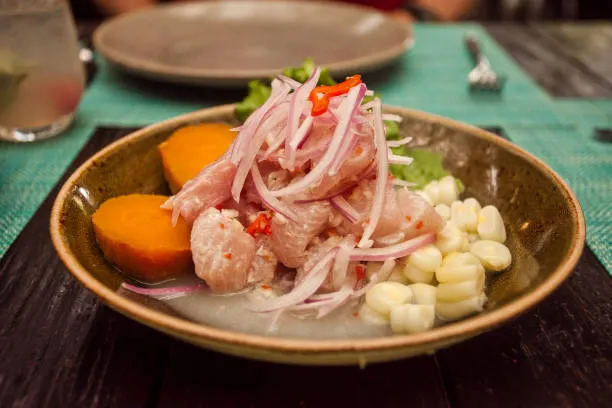
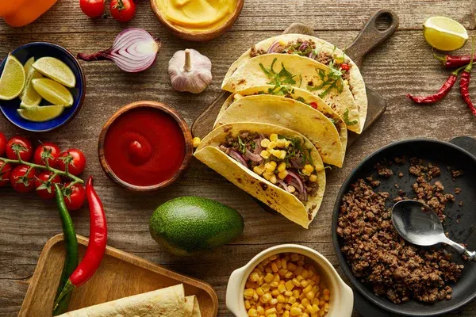
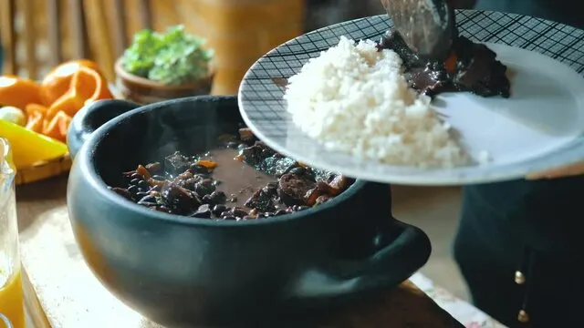
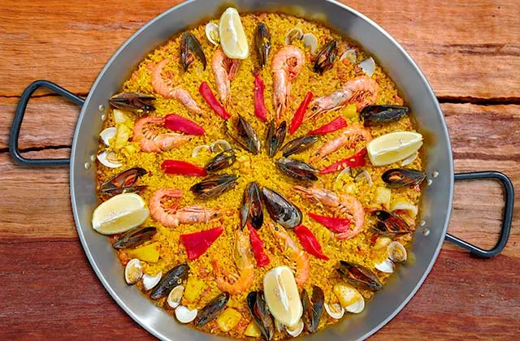
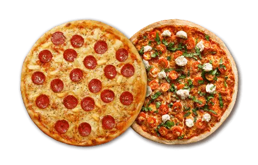
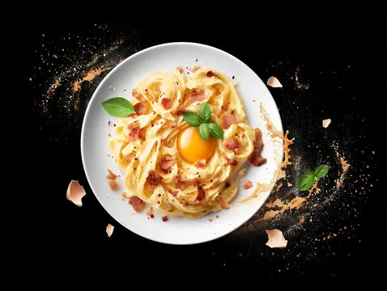

Gastronomía y Sabores del Mundo
| País | Descripción y Platos | Ingredientes Clave | Reconocimiento |
|---|---|---|---|
| Italia | Reina del Mediterráneo. Destaca por la simplicidad de sus recetas y la calidad de sus materias primas. |
|
Taste Atlas #1 |
| México | Fusión prehispánica y española. Sus técnicas de nixtamalización son únicas en el mundo. |
|
UNESCO |
| Japón | Máximo respeto por el producto de temporada. Se basa en el concepto de "Umami" (sabor sabroso). |
|
Técnica Refinada |
| Perú | Referente mundial por su biodiversidad. |
|
Joya de América y UNESCO |
| España | Famosa por su cultura de "Tapeo" y la dieta mediterránea. Líder en gastronomía molecular. |
|
Vanguardia |
Gastronomía Americana

Considerado Patrimonio Cultural de la Nación, es el plato bandera de Perú. Se basa en trozos de pescado fresco marinados en jugo de limón ácido, acompañados de cebolla roja, ají limo, cilantro y sal. Su frescura se equilibra perfectamente con el dulzor del camote y el crujiente del maíz tostado (cancha).

Uno de los grandes tesoros de la cocina callejera mexicana. Consiste en finas rebanadas de carne de cerdo adobada en una mezcla de chiles y especias, cocinada tradicionalmente en un "trompo" al fuego. Se sirven en tortillas de maíz con piña, cebolla, cilantro y una buena salsa picante.

Es el guiso nacional de Brasil, con raíces profundas en la historia del país. Se elabora a base de frijoles negros cocidos a fuego lento con una variedad de carnes de cerdo y embutidos. Se sirve tradicionalmente con arroz blanco, harina de mandioca tostada (farofa), naranjas frescas y col picada.
Gastronomía Europea

Originaria de la región de Valencia, es el plato más icónico de la cocina española. Se cocina en una sartén ancha y plana (paellera) sobre fuego de leña. El arroz se impregna del sabor del azafrán, el conejo, el pollo y las judías verdes, creando una capa crujiente en el fondo llamada "socarrat".

Declarada Patrimonio de la Humanidad por la UNESCO, la auténtica pizza de Nápoles destaca por su sencillez y calidad. Su masa es elástica y suave con bordes altos (cornicione), cubierta con tomates de San Marzano, mozzarella de búfala, albahaca fresca y aceite de oliva virgen extra.

Un clásico romano que destaca por su técnica. La salsa original no lleva nata (crema de leche); se crea emulsionando yemas de huevo frescas, queso Pecorino Romano, pimienta negra y el toque crujiente del guanciale (papada de cerdo). Es la definición de cremosidad y sabor intenso.